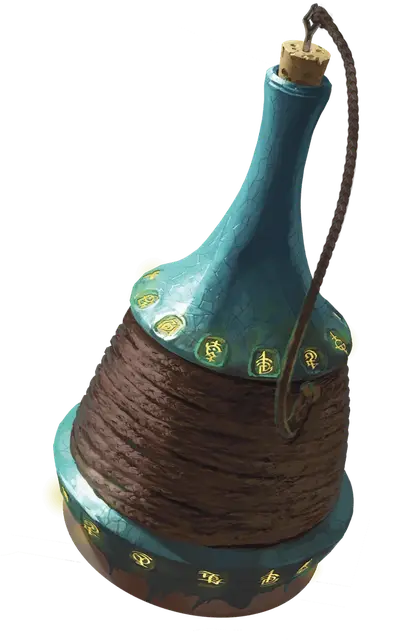

Бутылка заклинаний
Spell Bottle
Чудесный предмет, легендарный (требуется настройка)

Рекомендованная стоимость от 50 001 зм
Эта стеклянная бутылка может единовременно хранить в себе одно заклинание 5-го уровня и ниже. Когда её находят, бросьте к6 и вычтите 1; результат определяет уровень заклинания в бутылке (Мастер выбирает заклинание, а 0 означает, что бутылка пуста). Клубящийся синий пар заполняет бутылку, в то время как она содержит заклинание.
Пока бутылка пуста, любое существо может наложить в неё заклинание с 1-го по 5-й уровень, прикоснувшись к ней во время накладывания заклинания. Заклинание не оказывает никакого эффекта, кроме как оказаться в бутылке.
Держа бутылку, вы можете наложить заклинание, хранящееся в ней. Заклинание использует уровень ячейки, Сл, бонус атаки и заклинательную характеристику оригинального заклинателя, но в остальном рассматривается так, как если бы вы наложили заклинание. Бутылка становится пустой, как только накладывается заклинание.
Если вы держите пустую бутылку, когда видите существо, произносящее заклинание в пределах 60 футов от вас, вы можете реакцией открыть бутылку и попытаться прервать заклинание. Если существо накладывает заклинание 3-го уровня или ниже, заклинание не оказывает никакого эффекта, и попадает в бутылку. Если накладывается заклинание 4-го уровня или выше, совершите проверку Интеллекта. Сл равна 10 + уровень заклинания. При успехе заклинание не оказывает никакого эффекта и попадает в бутылку.